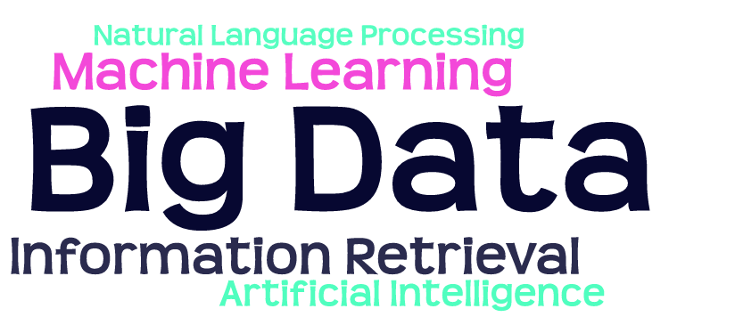

Welcome to my personal homepage
My name is Shubhra Kanti Karmaker (“Santu”). I am a Tenure-Track Assistant Professor in the Department of Computer Science and Software Engineering at Auburn University, Alabama. My primary research interest lies at the intersection of Natural Language Processing and Information Retrieval. Before joining Auburn University, I was a Postdoctoral Research Associate in the Laboratory for Information and Decision Systems at Massachusetts Institute of Technology (MIT), hosted by Dr. Kalyan Veeramachaneni. Before joining MIT, I completed my Ph.D. in computer science from the University of Illinois Urbana Champaign (UIUC) under the supervision of Prof. ChengXiang Zhai. During my Ph.D., I also worked as a research intern at Microsoft Research (Summer 2017 and 2018), Yahoo Research (Summer 2016), and @WalmartLabs (Summer 2015).
| Research Interests | Spotlight! |
|  |
1. Received \$700,854 basic research grant as the lead PI from NSF (Award) . 2. Received \$542,485 basic research grant as the sole PI from AFOSR. |
Our Sponsors (Thank You!!)

News and Announcements
- [August 2023] I have created a crash course about ACL Rolling Review (ARR) Service for the ACL Community. Youtube Link
- [July 2023] Received $700,854 basic research grant as the lead PI from NSF. News/(Award)
- [July 2023] Received $542,485 basic research grant as the sole PI from AFOSR. News
- [July 2023] My first Ph.D. Student Dongji Feng graduated this Summer. He is joining as a tenure-track assistant professor at Gustavus Adolphus College in Minnesota.
- [May 2023] Journal paper accepted at Information Processing and Management (Impact Factor 7.5)!!
- [March 2023] My students Naman Bansal and Mousumi Akter have been selected for Auburn University’s Outstanding Doctoral student award. Great Achievement!! Congratulations to them.
- [March 2023] My students Souvika Sakar and Mousumi Akter have been named 100+ Women Strong Outstanding Graduate Student Award recipients. Congratulations to them!!!
- [February 2023] I am now serving as the Communication Chair of ACL Rolling Reviews (ARR) Initiative. ARR
- [December 2022] Champion in the “Food for Thought” National NLP challenge hosted by Coleridge Initiative in collaboration with the US Department of Agriculture. Engineering College News / Agriculture College News
- [October 2022] Awarded Short-Term Innovative Research (STIR) Grant as PI. Sponsor: Army Research Office (ARO).
Media Coverage
- Auburn Engineering College featured me on August 2023. News Video
- My expert opinion on the Rise of the Chatbot and the Legal Dilemma. Al.com News
- AI expert opinion on the Large Language Models and Chatbots. News
- Auburn Engineering College reporting our championship in the “Food for Thought” National NLP challenge. News
- Auburn Agriculture College reporting our championship in the “Food for Thought” National NLP challenge. News
Older News
- [October 2022] Paper accepted at ACM Transactions on Intelligent Systems and Technology (Impact Factor 10.5)!!!
- [October 2022] Paper accepted at IEEE BigData 2022.
- [September 2022] Two Papers accepted at EMNLP 2022.
- [September 2022] Two Papers accepted at AACL/IJCNLP 2022.
- [September 2022] Paper accepted at COLING 2022.
- [March 2022] Paper accepted at ACL 2022.
- [October 2021] I am serving as an action editor for ACL rolling reviews (ARR)!
- [February 2022] Survey paper accepted at ACM Computing Surveys (Impact Factor 14.3)!!!!
- [October 2020] Best Poster Nomination at CIKM 2020 !!!
- [September 2020] Awarded Seed Grant as PI. Sponsor: Arizona State University.
- [January 2020] Joined Auburn University.